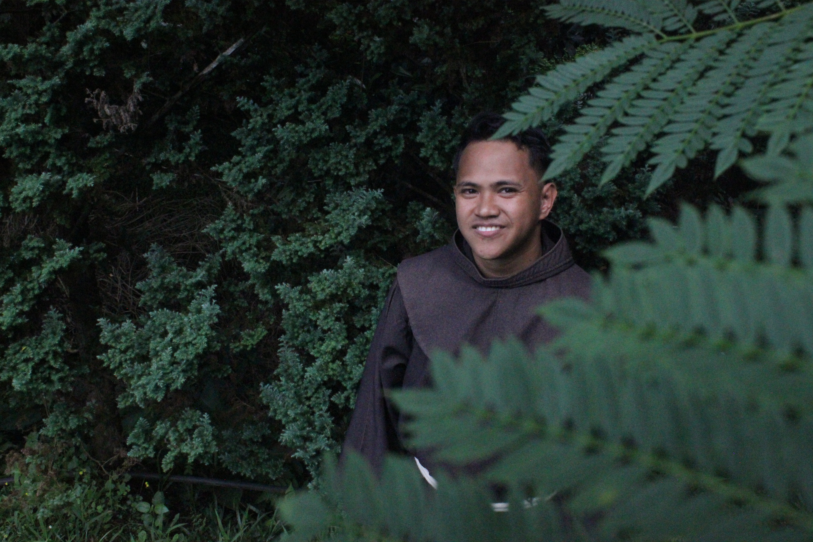

The "ofmsouthphil"
The Order of Friars Minor (OFM), founded by St. Francis of Assisi in 1209, is a Catholic religious community called to live the Gospel through a life of fraternity, simplicity, and poverty. Rooted in a deep love for Christ, the friars are inspired by St. Francis' radical embrace of the poor and the marginalized, his reverence for creation, and his unwavering devotion to the Church.
the Province of San Antonio de Padua – Philippines, which was joyfully elevated to provincehood in April 2023, this Franciscan spirit continues to flourish. The friars embody their calling by living among the people, particularly the poor and those on the peripheries, embracing a life of minority—a spiritual attitude of humility, openness, and servant leadership. Their presence is a quiet yet powerful witness to the Gospel values in today’s world marked by materialism, individualism, and ecological disregard.
The friars serve in diverse ministries: from parishes and formation houses to schools, and mission areas—both urban and rural. In each of these, they bring the warmth of fraternity and the clarity of the Gospel. They also engage in justice, peace, and integrity of creation (JPIC) initiatives, reflecting their commitment to the care of our common home and solidarity with the oppressed.
As sons of St. Francis, they strive to be instruments of peace, joy, and renewal—walking alongside the people with the heart of a brother, proclaiming not only with words but with their lives: Pax et Bonum! (Peace and Goodness!).
About This Webpage
This platform captures and showcases Franciscan moments—whether found in the simplicity of daily life or in the grace of extraordinary events in a friar’s journey. It seeks to inspire faith, foster community, and nurture a deeper appreciation for Franciscan spirituality and its relevance in today’s world.
Designed with a minimalist aesthetic, the website blends visual storytelling with the richness of vocational identity, offering visitors a meaningful glimpse into the heart of Franciscan life.
Vision
To be a radiant digital beacon of the Franciscan mission, illuminating the spirit of minority, fraternity, and service through compelling stories.
Learn MoreMission
To capture and share the heart of Franciscan life—its sacred simplicity, challenges, and joys—through inspiring narratives.
Learn MoreGoals
To elevate awareness, preserve moments, offer resources, and foster connections within the Franciscan community.
Learn MoreFeatured

Temporary Profession of Vows
Brothers Kyle R. Castañares, OFMNov of Pintuyan, Southern Leyte; Terence Visbal, OFMNov of Caibiran, Biliran; Ian Roy L. Delastrico, OFMNov; and Jake B. Goles, OFMNov of Tagoloan, Misamis Oriental will soon profess their temporary vows in the Order of Friars Minor – Franciscans, under the Province of San Antonio de Padua - Philippines...

Jubilee for the Season of Creation
“Praised be You, my Lord, through Sister Mother Earth, who sustains and governs us…” – St. Francis of Assisi, Canticle of the Creatures ...
The Developer

Br. John Ariel Rullan, OFM
Software Developer | Musician